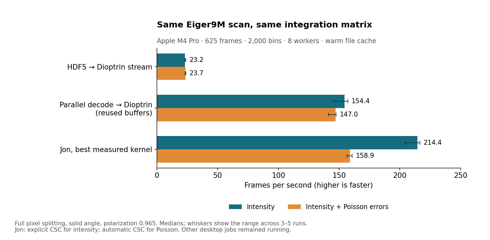

Measured locally on November 5, 2026. The input is the existing 5.69 GB Eiger9M scan: 625 uint32 frames of 3262 × 3108 pixels. Sampled nonzero occupancy is 99.94%.
Measured gain: best fused intensity throughput is 9.25× the ordinary HDF5 stream and 1.39× a reusable-buffer parallel decoder feeding Dioptrin. With Poisson errors, the corresponding factors are 6.72× and 1.08×.

| Full-file workflow | Intensity fps | Poisson fps | Intensity seconds / 625 |
|---|---|---|---|
| HDF5 → Dioptrin stream | 23.2 | 23.7 | 26.98 |
| Parallel decode → Dioptrin (reused buffers) | 154.4 | 147.0 | 4.05 |
| Jon, best measured kernel | 214.4 | 158.9 | 2.91 |
The automatic intensity kernel selected padded and delivered 157.8 fps in the reusable-buffer paired series. Explicit pipeline={"dot":"csc"} delivered 214.4 fps in the full-file verification. Batch sizes 1–8 had little effect in the sampled sweep. The Poisson matrix already selects CSC automatically.
With predecoded arrays and CSC selected, the same-process medians were Dioptrin 259.5 fps and Jon 362.9 fps. Dioptrin accepts float64 arrays; Jon accepts native uint32 input. These are each engine’s supported input path, with matching integration settings.
The same exported Dioptrin pixel-splitting LUT is used in both engines. Jon requires float32 weights; Dioptrin retains float64. Both use the same float64 normalization denominator. No counts are clipped, thresholded, or background-subtracted. The separate sparse pixel-list threshold is above the uint32 maximum.
All 625 integrated patterns and, in the Poisson variants, error arrays passed elementwise comparisons (rtol 2e-6, atol 1e-8). Full-file intensity relative L2 differences are about 1.29e-8. On 32 distributed frames, Poisson sigma relative L2 difference is 7.02e-9. Parallel decompression followed by Dioptrin produces identical results to the ordinary HDF5 path.
The stock upstream API does not expose Poisson errors. This benchmark constructs extra sparse-matrix rows with squared Dioptrin weights, so the native kernel accumulates signal and Poisson variance in one pass. This adapter work is included in the saved benchmark.
Input hash, binary hashes, compiler/build versions, per-block competing CPU load, numerical checks, individual trials, and min/max rates are in the files below. Fresh file opening and index/setup costs are not represented equally by every workflow: steady-state execution is the target. Cold storage, acquisition, GUI, and writing result files were not timed.
Run from the Dioptrin repository. Replace PYTHON with the interpreter of an isolated environment. The original HDF5 input and TIFF mask must remain at the documented paths. The derived calibration preserves geometry and adds the 75 µm pixel sizes obtained from pyFAI’s named detector.
git clone --recursive https://github.com/jonwright/bslz4_to_sparse.git /tmp/bslz4_to_sparse git -C /tmp/bslz4_to_sparse checkout 94264db5e0f812aaa71b91af286f560b00efb368 git -C /tmp/bslz4_to_sparse submodule update --init --recursive maturin build --release --interpreter PYTHON --out /tmp/dioptrin-wheels uv pip install --python PYTHON /tmp/dioptrin-wheels/dioptrin-0.6.1-*.whl /tmp/bslz4_to_sparse numpy scipy h5py hdf5plugin fabio psutil pyFAI RAYON_NUM_THREADS=8 cargo run --release --example export_benchmark_lut -- docs/benchmarks/2026-11-05-bslz4/calibration.poni /tmp/dioptrin-lut 3262 3108 2000 pixel_split OMP_NUM_THREADS=1 OPENBLAS_NUM_THREADS=1 VECLIB_MAXIMUM_THREADS=1 PYTHON python_examples/bench_bslz4_matched.py --hdf5 test_data/eiger_0000.h5 --poni docs/benchmarks/2026-11-05-bslz4/calibration.poni --mask test_data/eiger_0000.mask --lut /tmp/dioptrin-lut --workers 8 --full-file --output /tmp/matched-results.json Add --errors for Poisson propagation; --reuse-control-only for the reusable-buffer control; --tune-only for batch sizes 1/2/4/8.
Add --pipeline-json '{"dot":"csc"}' for the tuned intensity path or --compute-only to omit file workflows.
Dioptrin source: c6cb083de0510d6a3dbaa95b1a93b35be651e81a
Upstream source: 94264db5e0f812aaa71b91af286f560b00efb368